4．《原本》的第一篇到第四篇
第一篇到第四篇讲直边形和圆的基本性质。第一篇的内容是关于全等形的一些熟知的定理，平行线、毕达哥拉斯定理、初等作图法、等价形（有等面积的图形）和平行四边形。所有图形都是直边的，就是说，都是由直线段组成的。特别值得指出的是以下几个定理（措辞不是逐字逐句译的）：
命题1．在给定直线上作一等边三角形。
证明是简单的。以A为中心（图4.1）以AB为半径作圆。以B为中心以BA为半径作一圆。设C是一个交点。ABC便是所求的三角形。
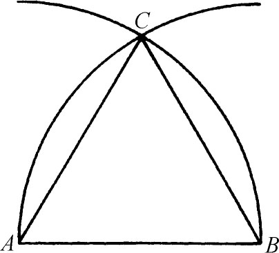
图4.1
命题2．过一已知点（作为一个端点）作一直线（段）使之等于一已给直线（段）。
也许你以为这只要用公设3就可以立即作出。但那样做就需要圆规在取了给定一段长度后移到指定点处时，圆规两脚间的给定距离能保持不变。但欧几里得假定用的是个不能固定两脚的圆规，所以给出了一个比较复杂的作法。当然，在以给定点为中心，以给定距离为半径画圆时（即只要圆规两脚尖都在纸面上时），欧几里得假定圆规两脚是能固定的。
命题4．若两个三角形的两边和夹角对应相等，它们就全等。
证法是把一个三角形放到另一三角形上，指明它们必然重合。
命题5．等腰三角形两底角相等。
书中证法比目前许多初级课本中的要好，因后者在这一阶段就假定了角A存在角平分线。但这个存在性的证明要依靠命题5。欧几里得把AB延长到F（图4.2），把AC延长到G，使BF＝CG。于是△AFC≌△AGB。因而FC＝GB，∠ACF＝∠ABG，及∠3＝∠4。现有△CBF≌△BCG，故∠5＝∠6，所以∠1＝∠2。帕普斯证这定理时是把所给三角形看作△ABC和△ACB。然后应用命题4，便知两底角相等。
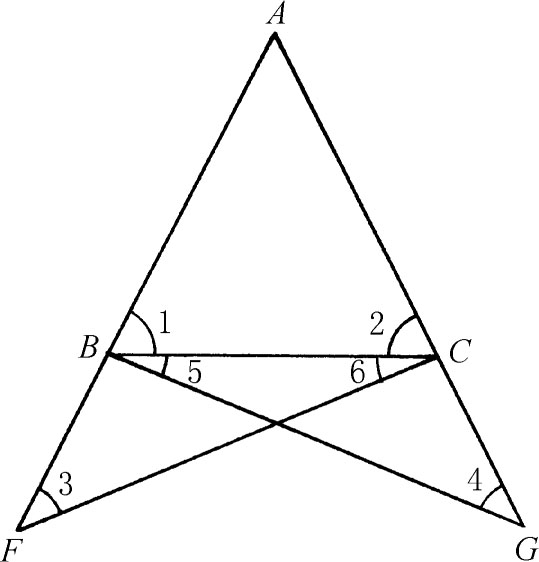
图4.2
命题16．三角形一角的外角大于其他两角中的任一角。
证明需要有一根能任意延长的直线（图4.3），因这里需要把AE延长一倍到F，而这必须假定头一步能做到才行。
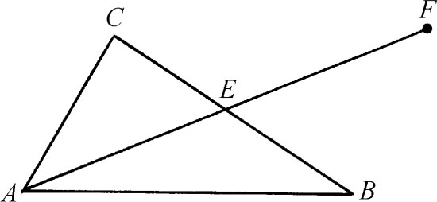
图4.3
命题20．任何三角形的两边之和必大于第三边。
这定理就如同我们在欧几里得几何里碰到的“两点间最短距离为直线”这一事实一样。
命题27．若一直线与两直线相交并使内错角相等，则该两直线平行。
证法是利用关于三角形外角的定理用归谬法。这定理确证了过给定直线外一点至少可作一直线与之平行。
命题29．一直线与两平行线相交时内错角相等，同位角相等，且同旁内角之和等于两直角。
证明里先假定∠1≠∠2（图4.4）。设∠2较大，两者都加上∠4，则有∠2＋∠4＞∠1＋∠4。这表明∠1＋∠4小于两直角。根据平行线公设（在这里第一次用到），AB与CD两给定直线就将相交，而题中则已假定它们平行。
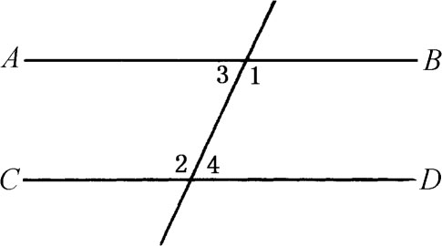
图4.4
命题44．在给定直线上作一平行四边形，使其一角等于已给角，而其面积等于已知三角形。
这命题（图4.5）说给定一三角形C，一角D及一线段AB。要以AB为一边作平行四边形含一角D并与C等面积。欧几里得是用以上一些命题来证的，这里就不讲了。应该指出的主要一点是：这是包括在面积应用理论下的第一个问题，而欧德摩斯把那个理论（据普罗克洛斯书上所载）归功于毕达哥拉斯派。在这题中，我们把一块面积（准确地）应用于AB。其次是，这是把一块面积变换为另一块的一个例子。其三是，在D为直角的特殊情形下，平行四边形必为矩形。那样便可把所给三角形和AB看成是给定的量了。于是矩形的另一边可看成是所给面积C和AB的商。这样我们就作出了几何上的除法。这定理是几何代数法的一例。
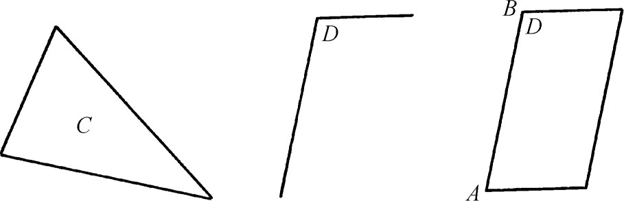
图4.5
命题47．直角三角形斜边上的正方形等于两直角边上的两个正方形之和。
这当然就是毕达哥拉斯定理。证明是用面积来作的，像许多中学课本里一样。我们证出（图4.6）△ABD≌△FBC，矩形BL＝2△ABD，正方形GB＝2△FBC。于是矩形BL＝正方形GB。同样有矩形CL＝正方形AK。
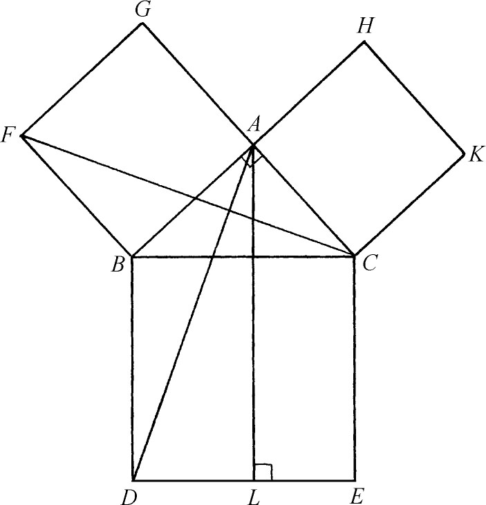
图4.6
这定理又告诉我们怎样作出一正方形使其面积为所给两正方形之和，即求x使
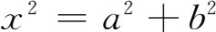
。因此这是几何代数法的又一个例子。命题48．若三角形一边上的正方形等于其他两边上的正方形之和，则其他两边的夹角是直角。
这命题是毕达哥拉斯定理的逆命题。欧几里得书中的证明（图4.7）是作AD垂直于AC且等于AB。由题设得
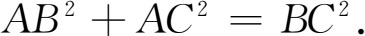
而由直角三角形ADC得
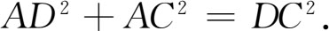
因AB＝AD，于是BC2＝DC2，从而BC＝DC。因此由s．s．s．（三边相等）知两个三角形全等，所以角CAB必为直角。
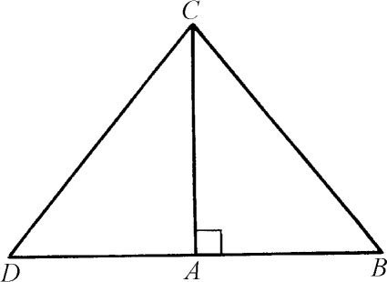
图4.7
第二篇中的突出内容是对于几何代数法的贡献。前已指出希腊人不承认存在无理数，所以不能从数量上处理所有长度、面积、角度和体积。这样他们就用线段来代替数。两数的乘积变成两边长等于两数的矩形的面积。三数的乘积是一体积。两数相加被他们翻译成把一线段延长到使所增长的部分等于另一线段。减法被说成是从一线段割去另一线段之长。两数相除则仅用两线之比一语来表明，这是同其后在第五、第六篇里所引入的原则一致的。
［两数］乘积（一块面积）被第三数除是这样做的：以第三数（长）为边作一矩形，使其面积等于所给乘积。矩形的另一边当然就是商。作图时用面积应用理论，这是在第一篇的命题44里已经触及到了的。两个乘积的加减是两个矩形的加减。矩形的和与差则以面积应用法化成单独一个矩形。在这种几何代数法里，乘积开平方就是作一正方形与给定矩形等面积，这在命题14中作出。
第二篇的头十个命题从几何上处理了下述等价代数问题。其中有些用我们的记法是：
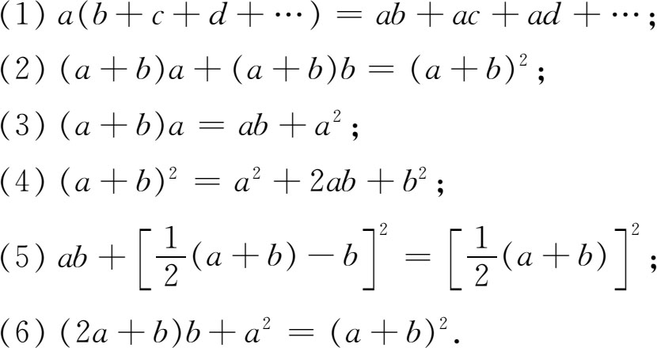
（1）的几何说法包含在：
命题1．若有两直线（图4.8），其中一线被割成任何多个段，则两直线所作矩形等于未割之线与各段所作出的各个矩形之和。
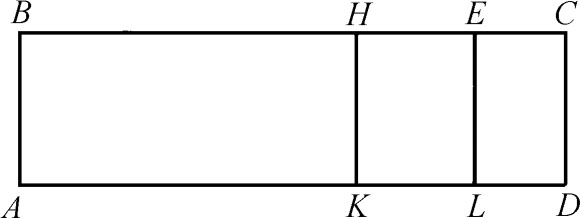
图4.8
命题2和3实际上是命题1的特例，但仍为欧几里得单独陈述并加以证明。（4）的几何形式是众所周知的。欧几里得的说法是：
命题4．若把一线在任意一点割开（图4.9），则在整个线上的正方形等于两段上的正方形加上以两段为边的矩形。
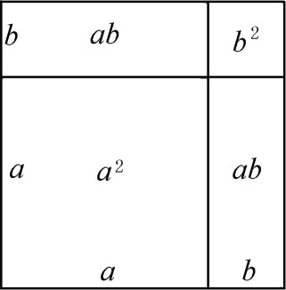
图4.9
证明给出了图中所示的明显几何事实。
命题11．分割一已给直线，使整段与其中一分段所成矩形等于另一分段上的正方形。
这是要我们把AB分于某点H（图4.10）使AB·BH＝AH·AH。欧几里得的作法如下：设AB是所给线，作正方形ABDC。令E是AC中点。作BE。令CA延长线上的F适合EF＝EB。作正方形AFGH。于是H就是AB上所需作的分点，就是说
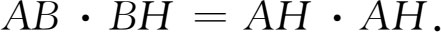
证明是通过面积得出的，所用的是前述一些定理，包括毕达哥拉斯定理，关键性的定理是命题6。
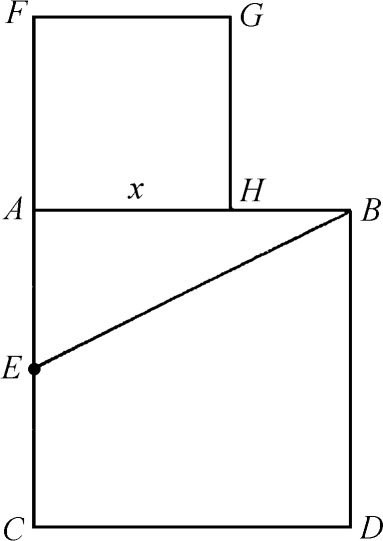
图4.10
定理的重要意义在于长为a的AB分成长为x及a-x的两段，使
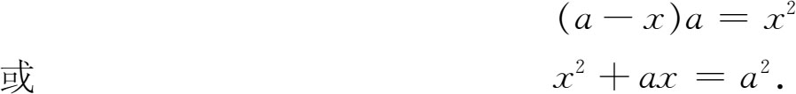
因此就有了解这二次方程的几何方法。还有，这又把AB分成了两部分，一部分是比例的外项，另一部分是比例的中项，就是说，从可得。第二篇中的其他命题相当于解二次方程
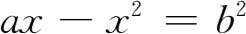
及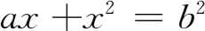
。命题14．作一正方形等于已知的直边形。
所给直边形可以是任何多边形，但若所给的是矩形ABEF（图4.11），则欧几里得的方法相当于延长AB至C使BC＝BE。以AC为直径作圆。在B处作垂线DB。所求的正方形就是DB上的正方形。欧几里得用面积作出证明。这定理解出了x2＝ab或者说求出了ab的平方根。我们将在第六篇里看到用几何方法解出更复杂的二次方程。
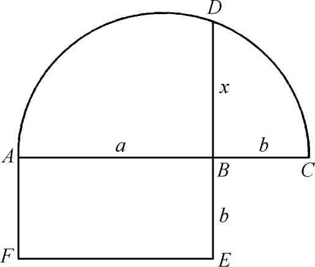
图4.11
第三篇含37个命题。它开头给出有关圆的一些几何定义，然后着手讨论弦、切线、割线、圆心角及圆周角等。这些定理大多是中学几何里所熟知的。下面几个定理值得特别提一下。
命题16．通过圆直径一端垂直于直径的直线全在圆外，且在这直线和圆周之间的空间内不能再插入另一直线；半圆和直径夹角大于而半圆和垂线夹角小于直线间的任何锐角。
定理的新颖之处在于考察了切线TA与弧ACE之间的空间（图4.12）；它不仅说在这空间里不能作过A并全部在圆外的直线，而且考察了切线TA与弧ACE的夹角。这角希腊人叫牛头角，对它是否有确定的大小一事当时是有争议的。命题16说这角比直线间的任何锐角小，但没有说这个角的值是零。
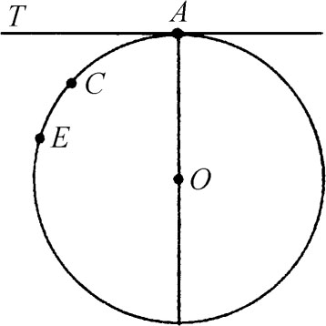
图4.12
普罗克洛斯把牛头角说成是真的角，在中世纪末和文艺复兴时代，卡丹（Jerome Cardan）、佩莱蒂耶（Jacques Peletier）、韦达（Francois Vieta）、伽利略（Galileo Galilei）、沃利斯（John Wallis）等人也辩论过牛头角的大小问题。牛头角之所以使后代欧几里得著作评注者特别感到头疼的地方是，可以作过A且与TA相切的一些直径愈来愈小的圆，并从直觉上似乎感到这牛头角显然会随之增大，而根据上述命题却并不如此。从另一方面说，如果任何两个牛头角的值都是零从而都相等，它们就应能重合。但它们却并不能重合。因此有些评注家下结论说牛头角不是角(2)。
第四篇在它的16个命题里论述圆的内接和外切图形，如三角形、正方形、正五边形和正六边形。最后的命题讲怎样在一给定圆内作正15边形，据说这是曾用于天文上的；因为在埃拉托斯特尼以前一直认为黄道角（地球赤道面与绕日公转轨道面的交角）之值是24°，或即360°的1/15。